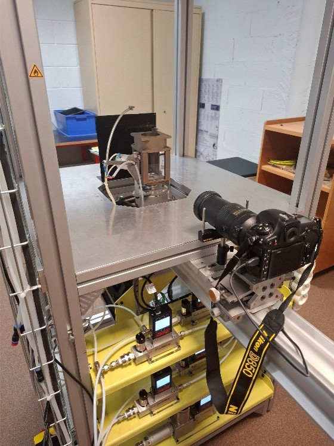
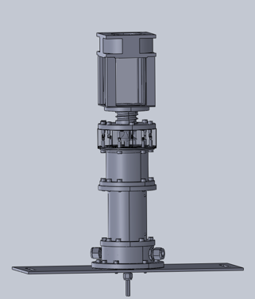
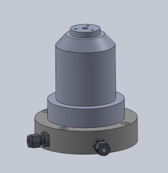
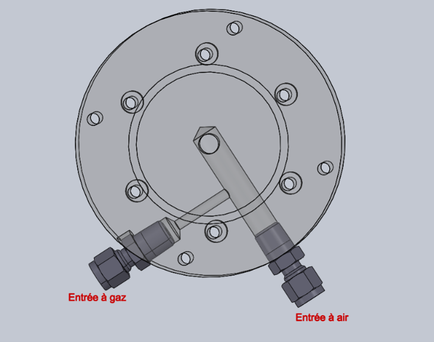
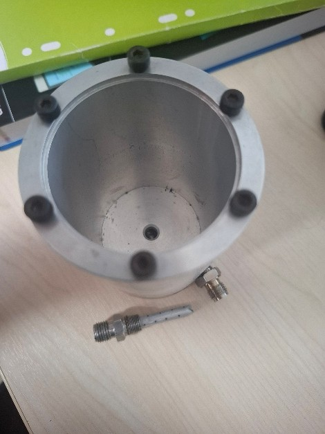
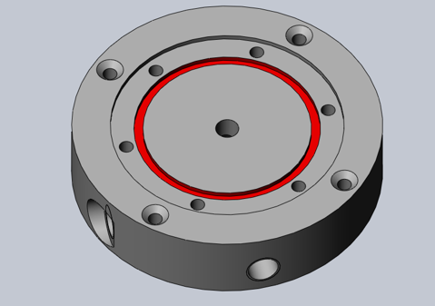
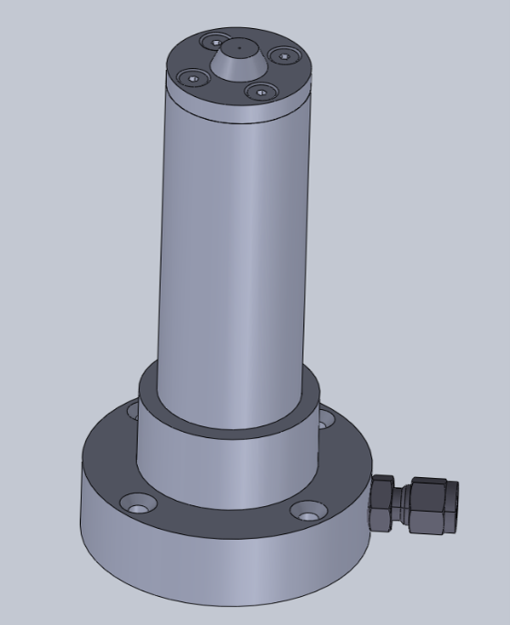
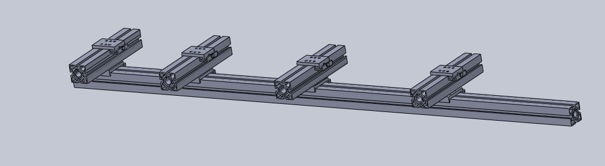
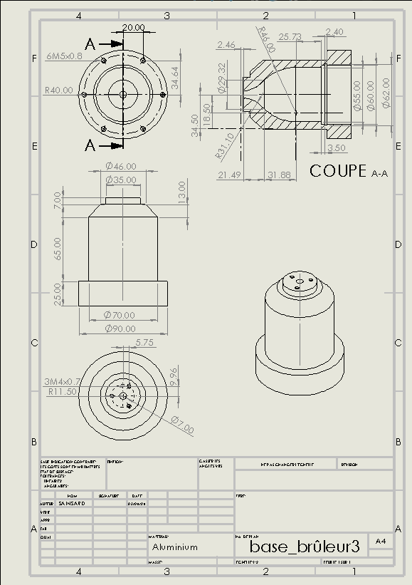
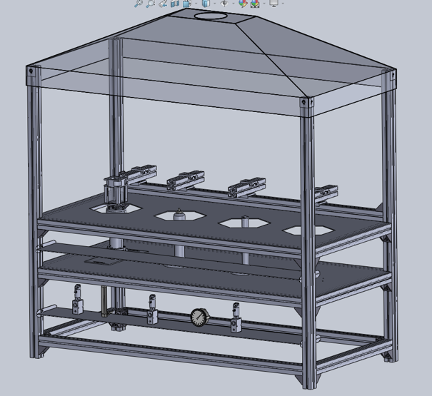

Projet 05 · Conception
Conception d’un robot marcheur
Dans le cadre de ma deuxième année, j'ai réalisé mon stage de 11 semaines dans le laboratoire PRISME à l'université d'Orléans. Mon objectif en lien avec un projet de l'université était de concevoir un banc didactique qui serait installé dans une nouvelle salle d'expérimentation. Ce banc didactique devait être composé de 4 brûleurs à hydrogène, permettant la combustion de ce gaz. Ceci était prévu pour des étudiants de l'université, pour réaliser des expériences et observer les flammes lors de la combustion.
Etude d'un banc déjà existant
Pour m'aider dans ma conception, un banc avait déjà été construit dans l'une des salles du laboratoire. J'ai donc pu étudier la structure de celui-ci pour commencer la conception de mon banc.
Un rail d'une caméra était installé sur le banc, j'avais pour objectif d'en concevoir également un mais muni de plusieurs caméras.

Un banc de combustion déjà installé au laboratoire
Conception de la structure
Je suis donc passé à la conception de la structure du banc sur SolidWorks. J'ai récupéré les fichiers 3D des éléments (notamment des profilés) et déterminé la taille de mon banc en laissant la place nécessaire pour l'ajout des 4 brûleurs. Dans cette partie, la difficulté était de concevoir dans les bonnes dimensions la hotte du banc. Je devais laisser un jeu nécessaire pour qu'elle puisse être correctement installée sur les profilés. Je suis aussi parti du principe que je devais laisser la place nécessaire pour l'ajout des instruments de mesure. J'ai donc installé des étagères réglables qui s'ajustent sur les profilés.
Conception des brûleurs
J'ai eu la possibilité de concevoir deux brûleurs. Un troisième m'a été directement donné en CAO pour que je l'ajoute à mon banc, le brûleur HYLON TNF. Ce a la particularité d’être conçu avec une pièce complexe placée juste avant la partie de combustion. Cette pièce munie d’ailettes crée un mouvement de swirl favorisant un mélange entre le gaz et l’air. Cela permet donc de stabiliser la flamme de la combustion.

Brûleur Hylon
Le premier brûleur que j'ai conçu s'appelle le brûleur laminaire ou bec Bunsen. C'est un brûleur conçu pour un gaz combustible de manière stable et contrôlée. Bien mélangé avec l’air, le gaz va alors se diriger vers la sortie du tube et s’enflammer pour créer la flamme. La vitesse d’écoulement étant stabilisée avec la vitesse de propagation de la flamme, un retour de flamme ne peut pas se produire. Cette forme laminaire du brûleur permet peu de turbulence, ce qui est justement important pour la stabilisation.

Brûleur laminaire
La difficulté lors de ma conception était justement de permettre un mélange correct entre mon air et mon gaz. J'ai conçu alors un couvercle muni de raccords d'arrivée de gaz. Grâce à un système, mon air arrive tangentiellement à mon gaz, qui lui est diffusé grâce à un petit tube muni de trous. L'air peut se charger en gaz et mon mélange est correctement effectué.

Couvercle avec diffusion du gaz (l'air arrive tangentiellement à la pièce en forme de tube munie de trous)

Ancien Brûleur avec le raccord muni de la rallonge/tube munie de trous
Pour permettre une bonne étanchéité à mon système, j'ai dû concevoir des gorges à joints toriques en haut de mon brûleur et dans le couvercle.

Couvercle avec les gorges pour les joints
Pour mon dernier brûleur, il était beaucoup plus simple et comportait moins de contraintes. Le gaz seul arrive et remonte dans un conduit. Ce conduit se rétrécit et permet donc grâce au débit la combustion avec l'air en haut de mon brûleur. La seule contrainte que je me suis fixée, était de reproduire un brûleur de la même hauteur que le précédent pour ne pas avoir à modifier le support et avoir deux fois le même.

Brûleur droit
Conception du rail de caméras
La conception du rail de caméras permettait de se fixer une idée sur les possibilités d'installations, mais n'était pas définitive. J'ai conçu mon sytème sur des rails Bosch avec la possibilité des caméras de se déplacer selon différents axes, pour permettre une adaptation optimale.

Rail de caméras
Vue globale du banc et plans
La suite de mon projet a été de réaliser les plans de mes brûleurs pour les faire fabriquer par des sous-traitants. Je n'ai malheureusement pas pu voir la fabrication de mes brûleurs car mon stage arrivait à son terme.

Plans du brûleur laminaire

Vue globale du banc en CAO